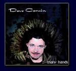

| Artist: | Dave Corwin |
| Title: | Many Hands |
| Label: | self produced 783707310824 |
| Length(s): | 52 minutes |
| Year(s) of release: | 2002 |
| Month of review: | [04/2003] |
| 1) | Break The Mountain | 4.22 |
| 2) | The Root | 5.10 |
| 3) | Shaolin Master | 3.49 |
| 4) | Kicking The Rain | 5.08 |
| 5) | The Seed | 1.04 |
| 6) | So Sad (Great Movie) | 4.20 |
| 7) | Cycle Of Night | 3.37 |
| 8) | Can't Kill The Dream | 3.50 |
| 9) | The Soil | 1.42 |
| 10) | Not Your Place | 4.58 |
| 11) | Fall | 3.33 |
| 12) | Ride The Tide | 2.59 |
| 13) | The Stone | 3.32 |
| 14) | Pass The Years | 3.58 |
With The Seed we come to the first instrumental, a short one. Not surprisingly, it is the percussion that is in control, with some weird keyboard meanderings riding along. So Sad (Great Movie) is an up-beat track with a nice bridge in which the keyboards dance. For the remainder, the song is a bit too ordinary, but the end does compensate.
Cycle Of Night is a love ballad, a sad one, where piano and percussion figure next to the dominating vocals. On the other hand, Can't Kill The Dream opens with fast acoustic strumming.
The Soil is short didgeridoo type instrumental, very world like, but with a strong beat. Not Your Place opens with the electronic snore and bleepy keys. The song combines a hard rock riff with a fast country music like chorus. Strange, and I don't think I like it. The guitar solo sounds a bit far away, making it sounds seventies like.
Didgeridoo opens Fall, dark and low. Soft percussion, spaceous guitar, whispered vocals, the song stays rather sparse. During the chorus the vocals are doubled and the percussion is louder. The intermezzo starts of nicely with clear keyboards, but it is not for long. Ride The Tide opens with fast paced drums. A Bowie influence is felt here, notwithstanding the overall country feel. The country sound a bit far away, a bit muffled. Now Corwins voice is quite sharp, so that compensates, but it seems to me that productionally things could improve here. The country influence becomes even stronger later on.
The Stone is more a psychedelic affair, again strongly percussive and for some reason it reminds me of solo Roger Waters. The final one is Pass The Years, which has a mellow rock ballad opening. The vocals are lower here, I like them better that way, and features some more melodic material than average. Nice.
Although the front cover does correspond to the album title, I do not think it is nice to look at.